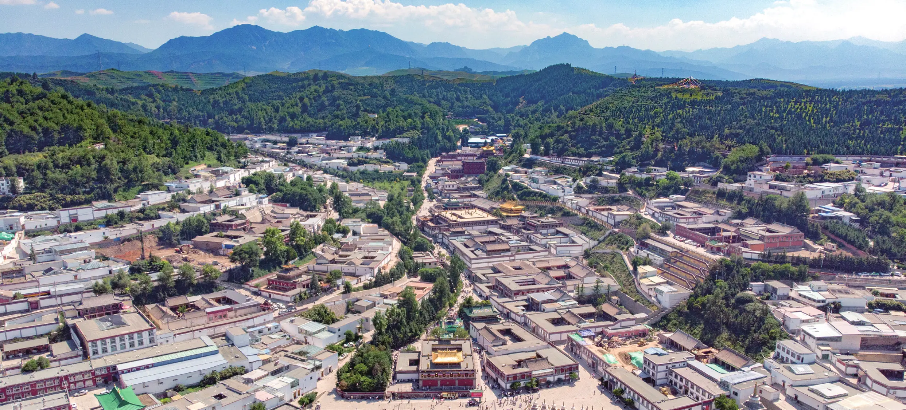
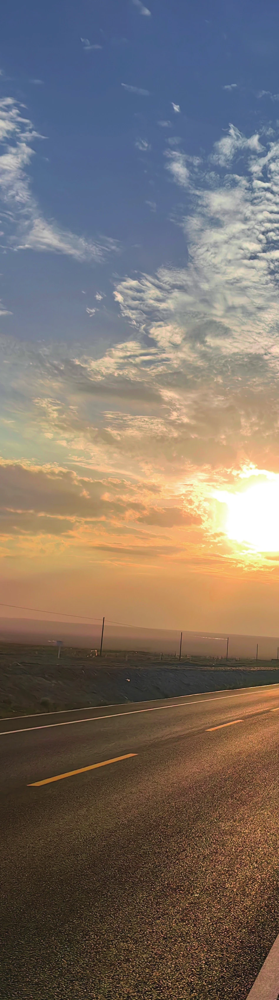
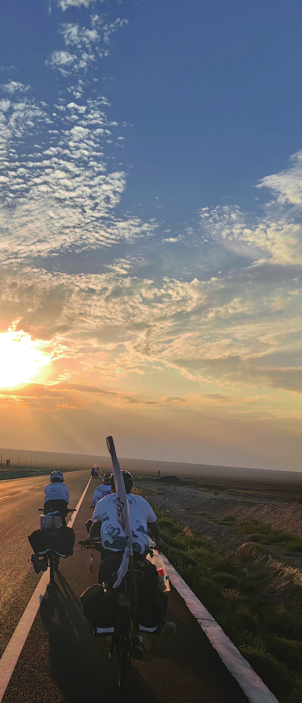

单车上逐日
原刊33
我参加了北大车协 2023 年的暑期远征，印象里最深刻的一幕，是在一天日行 150km 的骑行。这是我们暑期的高光时刻，也接近这一个月的旅行的尾声。黑夜前的黄昏总是来得轰轰烈烈，燃烧了半边天，像宣示着某种终结，显得那么壮烈。我紧跟在前旗助八哥后面，音箱里放着不知循环过多少遍的老歌，和旁边的七七聊着古怪的话题，小哥生病，落在了后旗，团儿和后旗十哥陪着他。我永远记得那画面——路两边是戈壁滩，一行人就像荒漠中的行者，一路西行，道路尽头的夕阳一点一点地被蚕食，隐没，回收最后一丝光亮，随即而来的是沉寂，无边的黑。
我的手电筒没电了，八哥似乎在黑夜的笼罩下显得格外亢奋，“拐个弯就到了”，但我的肚子好饿，后旗怎么还不到……
回忆像剪影一般闪过，在接下来的学期缠绕着我，又好像并未结束——从此我有了一群可爱的团众，一场可能一生仅此一次的旅行，也与车协结下了解不开的羁绊。这些支撑着我，也陪伴着我。
如果你看到这里，那么感谢你能聆听我的故事。我不想说我对自行车这项运动有多么热爱。相比于协会里我所认识的一众会员，为协会的发展尽心尽力、建言献策，我表现出的似乎更多是割裂与矛盾。像多数初来北大的新生一样，迷茫二字贯穿了我大一的生活，中学时代被压抑的天性在突如其来的自由面前显得有些措手不及。我徘徊于课业、学工和社团之间，每天都在忙碌，像一只无头的苍蝇，不停的乱撞、折腾，看见新奇的东西就凑上去，即使不知道为何。


而我会感谢这一年的折腾，加入车协，是我最不后悔的事。
我不知道会有什么样的观众能看到我这篇文章，也许是车协的新老会员，也可能是对车协产生兴趣的同学。相信你们也会读到暑期队员们的暑期故事和老会员们云游四海的足音，你们会向往，会憧憬，会感慨，但可能难以做到真正的感同身受。每个人在车协的故事，应当由自己去书写。而我更宁愿分享一番个人对车协的感受，兴许能找到共鸣，能博读者一笑，便已足矣。
作为贵校一位普通的本科生，我抱着一腔学术理想，就读于某疯人院。没有竞赛经历的我在这个圈子里格外自卑，即使是习惯于尝试和冒险，却总对自己做的事情没有信心。车协对于我更像是一个可以出逃的避风港，出去拉练的时候，我可以抛下一切琐事，暂时地把大脑放空，只感受到双脚不停地蹬。可这股奇怪的自卑感还是让我难以融入协会开放友好的氛围。玩乐之余，我喜欢把自己关起来，一个人想，一个人思考。
第一年，我去过慕田峪，后来因为新冠疫情封校，淡协了一段时间。坦白地说，这一次短暂的接触，并没有让我对协会产生什么感情，也鲜留下足迹。来年春天，可能是一时兴起，也可能是闲得发慌，我去了潭柘寺，当了第一个职务，接着又参加了春训，考了队医。这段时间我认识了不少协会的朋友，不知不觉又通过春训，入选了暑期，我感到生活渐渐有了起色，我在协会的角色也多样了起来。车协人的包容、热情，足以融化一切的坚冰。我尝试放开自己，收获了很多美好的经历——这是我的春天。
回过头看，至少我的体能得到了飞跃般的提升，完美通过了春训，这何不是一种成就呢？我隐约地感觉自己并不是那么一无是处。
然而这时我对自己的定位还是迷茫，我的学业并不出色，可我暂时不管这些，这时我只有一个念想：去暑期。
一个月的旅途，发生了太多事情，我不再赘述，只需知道它们对我来说是极宝贵的。到更远的地方看看——这是我去暑期的初衷。同高原上的湖泊与草甸一样秀美的，是绚丽的藏族文化和异域风情。我爱热情友好的人们，更爱我朝夕相伴的团众。暑期真的让我见识到许多东西，我开始真正体会什么是“深入社会，融于自然”的协会精神；这些协会前辈们也曾经像我们一样，追求诗和远方；我第一次依靠团队的力量，完成一项颇有意义的成就，我好像又不是那么一无是处了。
褪下“北大学子”的光环，我的团众们是生动和立体的，很普通，也很伟大。他们会犯错，会有可爱的地方，也会在关键时刻挺身而出，他们教会了我以怎样的姿态去和人相处——真实、大方，有责任心，没有什么好自卑的。这是我遇见过最好的团队。
我好像也明白了车协为何能以这样的制度传承至今：一种对集体的情感，对队友的认同，使得总有人在被需要的时候义无反顾地去做，我也顺势成为其中一员，参与协会的日常运营。不知是怎样的力量推动着我去做这些没有报酬的事情，但我愿意，车协是学校里唯一让我感觉像家的地方。这很奇怪，但它在学生时代是真实的，我的撕裂感逐渐褪去。




暑期结束了，但我的故事没有结束。有我的团众们的陪伴和鼓励，有车协这个大家庭的温暖，有这么多的精神财富，我重拾起自信，过得忙碌且充实。虽然去拉练已少了初入协时候的激情，更多的是想去看看老朋友，和大家一起骑车。我的学业也有了起色。如果说我与一年前的我有什么差别，我想是摆脱自卑。这当然难逃我在车协经历的种种。我希望骑着车，去寻光逐日。
我对协会的爱，谈不上多么投入，但我迫切希望它吸引更多的行者，走他们的路，续写协会的春天，也写自己的故事。“折腾”不是坏事，热爱终有回响。